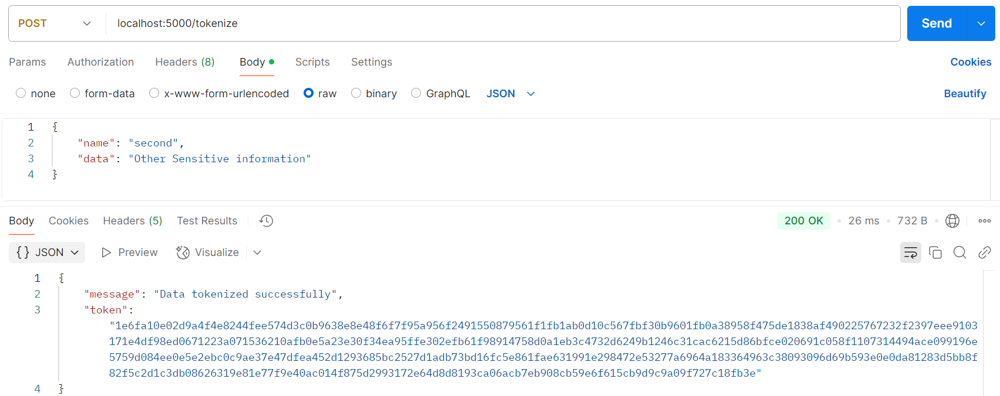
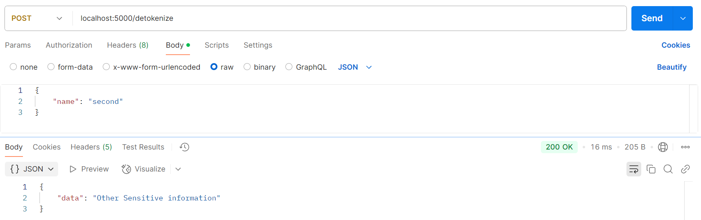

Building a Vaulted Tokenization Service With Kubernetes
Introduction Link to heading
Tokenization is a process that replaces sensitive data with non-sensitive data, typically using a reference token that maps back to the original data. This is a practice that is part of secrets management, a method of secretly storing, accessing, and managing digital secrets.
In my pursuit of learning more about DevSecOps, I wanted to get my hands on some Kubernetes work to learn about the deployment, scaling, and management of containerized applications. Kubernetes was chosen for its ability to manage containerized applications specifically at scale. This makes it a valuable skill to have in DevOps.
In the lab covered in this post, we will create a simplified version of a vaulted tokenization service, containerize it, and host it using Kubernetes.
Technology Stack Link to heading
For the tokenization service, I created a simple flask API that tokenizes information, stores it, and allows the information to be detokenized and retrieved. This application came to mind as a simple API I could set up, and is even reminiscent of the capstone work from senior year!
To set up Kubernetes I used Minikube. Minikube is an open source tool that allows developers to spin up a local cluster, eliminating the cost and complexity of the cloud when testing. For development, this tool is invaluable.
Finally for containerization, like last weeks Lab I am using Docker.
Tokenization Workflow Link to heading
The tokenization service supports two functions:
- Tokenization: Users send a
POSTrequest with anameanddata. The data is encrypted using a public key and stored in a YAML file alongside the token name. - Detokenization: Users send a
POSTrequest with aname. The token associated with the name is retrieved from the YAML file, decrypted using the private key, and returned to the user.
Setting Up Kubernetes Link to heading
To host this with Kubernetes, we first create a cluster using Minikube.
minikube start –driver=docker
This will spin up the Kubernetes cluster, preparing us to load pods with containers to run and administrate. To achieve this, we must create YAML files to configure our pods, services, and deployment.
The first YAML file is the deployment.yaml file. Some of the most important specifications in this file are the declaration of container name and image for our application, container port for its networking, and volume mounts for access to saving tokens. More specifics on this can be found in the official docs.
deployment.yaml:
apiVersion: apps/v1
kind: Deployment
metadata:
name: tokenization-service
spec:
replicas: 1
selector:
matchLabels:
app: tokenization-service
template:
metadata:
labels:
app: tokenization-service
spec:
containers:
- name: tokenization-service
image: tokenization-service:latest
imagePullPolicy: Never
ports:
- containerPort: 5000
volumeMounts:
- name: app-data
mountPath: /app/saves
volumes:
- name: app-data
emptyDir: {}
NOTE: the volumeMounts ensures the file for token storage is persistent. This deployment also has imagePullPolicy: Never so as to not hang in attempting to pull an image.
The next YAML file is the service.yaml file. This, like the previous file, offers configuration but for the service API for Kubernetes. A service makes an endpoint and declares how the pods are accessible. In our case, we specify some metadata, port protocol, and port numbers.
service.yaml:
apiVersion: v1
kind: Service
metadata:
name: tokenization-service
spec:
selector:
app: tokenization-service
ports:
- protocol: TCP
port: 5000
targetPort: 5000
type: NodePort
Deployment Link to heading
For this lab environment, the Docker image is loaded directly into the Minikube cluster. In a production environment, images are typically hosted in a container registry such as Docker Hub or AWS ECR.
To begin deployment, the docker image is built and loaded locally.
docker build -t tokenization-service .
minikube image load tokenization-service:latest
We then apply our Kubernetes configurations, deployment.yaml and service.yaml.
kubectl apply -f deployment.yaml
kubectl apply -f service.yaml
This will begin the creation of the pods we specified and start containers for the service. Just like that a single node Kubernetes cluster running a custom application.
Tokenization Link to heading

Detokenization Link to heading

Lessons Learned Link to heading
Kubernetes is highly configurable. This means there are many opportunities to make mistakes. I spent a lot of time chasing errors and going over configuration files. Because of this granularity in configuration there exists many Kubernetes tools! This article is a great introduciton to that world.
Conclusion Link to heading
This project provided me with valuable experience in Kubernetes and DevSecOps principles. I have a much better understanding of Kubernetes and some new found comfort working with it.